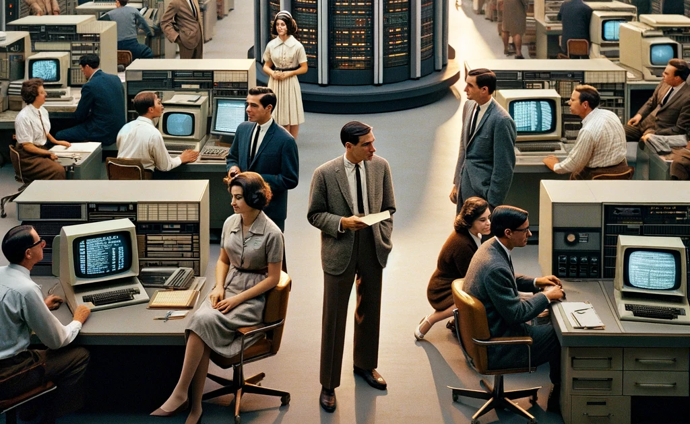

Ahora se presentaran las generaciones que mas destacaron por su impacto
Esta fue la primera familia de computadoras diseñadas para ser compatibles entre sí permitiendo a las empresas escalar sus sistemas sin necesidad de cambiar todo el software Su impacto fue tan profundo que estableció el estándar para los mainframes modernos usados hasta hoy en sectores críticos como banca y gobiernos La arquitectura escalable que introdujo se convirtió en la base de la computación empresarial moderna y salvó financieramente a IBM generando ingresos equivalentes a más de cien mil millones actualizados Los sistemas actuales como la serie IBM Z todavía utilizan principios derivados de este diseño pionero
Esta computadora personal representó el primer equipo masivo estandarizado que combinaba componentes de diferentes fabricantes como el procesador Intel y el sistema DOS de Microsoft Su lanzamiento popularizó definitivamente la computadora como herramienta tanto para negocios como para hogares y creó un ecosistema abierto que permitió el surgimiento de clones y competidores Aunque con el tiempo IBM perdió el control sobre el estándar que había creado frente a Microsoft e Intel su diseño original definió la estructura básica que siguen las computadoras personales hasta la actualidad Conceptos como la BIOS y los slots de expansión que introdujo siguen siendo relevantes décadas después